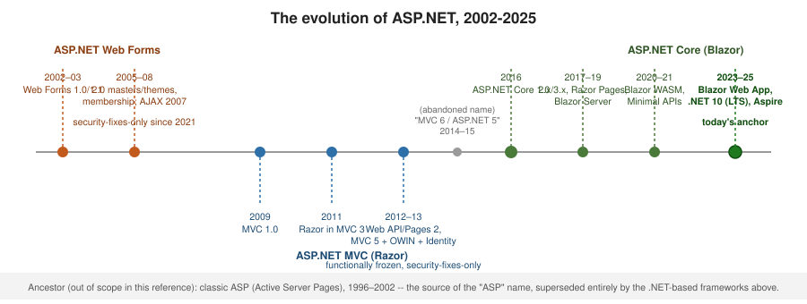

The Evolution of ASP.NET
|
This content was generated with the assistance of AI and should be verified against the official documentation before being relied on in production. |
"ASP.NET" is not one framework — it is three, born at different times, on different runtimes, for different reasons. This page traces how each lineage came to exist and how they relate, so the rest of this section’s choice between ASP.NET Web Forms, ASP.NET MVC (Razor) and ASP.NET Core (Blazor) makes sense as history, not just as three unrelated sub-sections.

Before ASP.NET: classic ASP
The "ASP" name predates .NET entirely. Classic ASP (Active Server Pages), shipped with IIS from 1996, mixed VBScript or JScript directly into HTML pages executed top-to-bottom on each request, with no compiled code-behind, no server-control model, and no managed runtime underneath it. It is the direct ancestor of the "ASP.NET" name but shares essentially no architecture with what follows. Classic ASP is explicitly out of scope for this reference — it is mentioned here only as the historical origin of the name.
2002-2008: ASP.NET Web Forms
-
2002 — Web Forms 1.0/1.1, launched with the first version of the .NET Framework. Web Forms brought a compiled, event-driven, stateful programming model to web development — a server-control tree, postbacks, and ViewState that made a web page behave, from the developer’s point of view, much like a desktop form. See The Page Life Cycle and Postback Model for how that model actually works.
-
2005 — ASP.NET 2.0 added master pages, themes and skins, the provider model (membership, roles, profile), and the first generation of rich data-bound controls and Web Parts.
-
2007 — ASP.NET AJAX (
UpdatePanel,ScriptManager) retrofitted partial-page updates onto the postback model without changing its fundamentals — covered in AJAX and Client-Side Integration.
Web Forms remains supported on .NET Framework 4.8.1 today, but it is functionally frozen and receives security fixes only — see the Web Forms sub-section for its full scope and Migrating to Modern ASP.NET for what comes next for an existing Web Forms application.
2009-2013: ASP.NET MVC and the Razor era
Web Forms' event model and ViewState made pages heavy and hard to unit-test; a growing community wanted the plain Model-View-Controller pattern popular in Rails and Spring MVC, with full control over rendered HTML.
-
2009 — ASP.NET MVC 1.0 shipped as an alternative,
System.Web-hosted pipeline alongside Web Forms (both could coexist in one application). It used the WebForms (.aspx) view engine at first. -
2011 — Razor arrives in MVC 3. The
.cshtmlsyntax —@expressions instead of<%= %>— became the default view engine and is still what "Razor" means today, in both this lineage and ASP.NET Core. See Razor Syntax for the syntax itself, including its standalone sibling, ASP.NET Web Pages. -
2012 — Web API and Web Pages 2 rounded out the platform: Web API for HTTP services independent of MVC’s view rendering, Web Pages for Razor without a full MVC application.
-
2013 — MVC 5, Web API 2, OWIN/Katana and ASP.NET Identity 2 arrived together as
System.Web.Mvcversion 5. OWIN introduced an open,IAppBuilder-based middleware pipeline (a precursor in spirit to ASP.NET Core’s own middleware), and Identity 2 replaced the old Membership provider model. This combination — MVC 5.3.x / Web API 2.2 / Web Pages 3 / OWIN / SignalR 2 / Identity 2 on .NET Framework 4.8.1 — is exactly what the ASP.NET MVC (Razor) sub-section documents, and, like Web Forms, it is functionally frozen and security-fixes-only.
2014-2015: the abandoned "MVC 6 / ASP.NET 5"
Microsoft’s first attempt at a cross-platform successor was announced as "ASP.NET 5" with an "MVC 6" that
unified MVC and Web API on a new, System.Web-free runtime (DNX). The name caused enough confusion with the
existing ASP.NET 4.x line that Microsoft renamed the whole effort before its 1.0 release — it shipped as
ASP.NET Core 1.0 in 2016. Nothing named "MVC 6" or "ASP.NET 5" ever reached general availability.
2016-2025: ASP.NET Core (Blazor)
-
2016 — ASP.NET Core 1.0, a full rewrite: cross-platform (Kestrel, no IIS dependency), open-source,
Startup-based middleware pipeline, and a built-in dependency-injection container from day one. See Getting Started with ASP.NET Core and Request Pipeline and Middleware. -
2017 — Razor Pages (Core 2.0) offered a page-focused alternative to full MVC, direct competition with Web Forms' page-centric model but built on Core’s pipeline — see Razor Pages.
-
2019 — Blazor Server (Core 3.0) brought C#-driven interactive UI to the browser over a SignalR circuit, the first step of what is now the Blazor cluster.
-
2020 — Blazor WebAssembly ran the same component model client-side, compiled to WASM, with no server round trip for UI updates.
-
2021 — Minimal APIs (.NET 6) offered a low-ceremony alternative to controller-based Web APIs for small services — see the Core index for where it sits next to controller-based Web APIs.
-
2023-2025 — the unified Blazor Web App, combining server and WebAssembly render modes with static and streaming SSR in one project, plus .NET Aspire for cloud-native local orchestration, arrived across .NET 8-10. .NET 10 (LTS), released November 2025, is today’s anchor and what the ASP.NET Core (Blazor) sub-section documents.
Where this leaves an existing application
None of the three lineages replaced the others in place — ASP.NET Core did not update Web Forms or MVC 5
applications, it gave new applications a different, cross-platform runtime to start on. An application built
on Web Forms or MVC 5 keeps running on .NET Framework 4.8.1 with security fixes; it does not gain ASP.NET
Core’s features by upgrading .NET Framework versions, because Web Forms and System.Web.Mvc never shipped on
.NET Core/.NET 5+. See Choosing an ASP.NET Framework for what that
means when deciding where to invest next.
What actually changed underneath
The three lineages differ less in their page syntax than in the machinery that carries a request to application code. Seeing that machinery side by side explains why a Web Forms or MVC 5 application cannot simply be recompiled for ASP.NET Core.
HttpApplication events, HttpModules"] SW --> HH["HttpHandler: Page or MvcHandler"] HH --> APP1["Application code"] end subgraph Modern["ASP.NET Core on .NET"] direction TB KES["Kestrel (or IIS, HTTP.sys)"] --> MW["Middleware pipeline
RequestDelegate chain"] MW --> EP["Endpoint: Minimal API, controller,
Razor Page, Blazor, hub"] EP --> APP2["Application code"] end
-
Hosting.
System.Webis part of the .NET Framework and tied to IIS; ASP.NET Core hosts itself on Kestrel and can sit behind IIS, Nginx or a cloud load balancer. That is what made Linux containers possible. -
Request model.
HttpApplicationraises a fixed sequence of events thatHttpModuleclasses subscribe to; ASP.NET Core composes a pipeline of delegates you order yourself. A module’s logic becomes a middleware component, a handler becomes an endpoint. -
Services and state.
HttpContext.Currentwas a static, thread-affine accessor; ASP.NET Core passesHttpContextexplicitly and injects services through one built-in container. ViewState and the control tree have no counterpart: state is explicit. -
Distribution. The framework moved from a machine-wide install, updated with Windows, to NuGet packages that ship with the application, so each app chooses its own version and can run next to others.
The same page in all three
A page that greets a visitor by name shows the difference in programming model. Each version below does the same
thing: read an optional name from the query string and render a greeting, with output encoding handled by the
framework.
Web Forms (.NET Framework) — markup plus code-behind, event-driven:
<%-- Hello.aspx --%>
<%@ Page Language="C#" AutoEventWireup="true" CodeBehind="Hello.aspx.cs" Inherits="Shop.Hello" %>
<html><body><asp:Label ID="Greeting" runat="server" /></body></html>// Hello.aspx.cs
public partial class Hello : System.Web.UI.Page
{
protected void Page_Load(object sender, EventArgs e)
=> Greeting.Text = Server.HtmlEncode("Hello, " + (Request.QueryString["name"] ?? "world"));
}MVC 5 (.NET Framework) — controller picks a view, conventional route {controller}/{action}:
public class HelloController : Controller
{
public ActionResult Index(string name) => View((object)(name ?? "world")); // Views/Hello/Index.cshtml
}@model string
<p>Hello, @Model</p>ASP.NET Core (Razor Pages) — page and handler colocated, route from the file location:
@* Pages/Hello.cshtml *@
@page
@model HelloModel
<p>Hello, @Model.Name</p>public sealed class HelloModel : PageModel
{
[BindProperty(SupportsGet = true)] public string Name { get; set; } = "world";
}The Web Forms version needs a server control, a code-behind class and an explicit HtmlEncode; the MVC 5 version
needs a controller and a view in conventional locations; the Core version needs only the page and an optional model.
The Razor @Model.Name expression is HTML-encoded automatically in both MVC lineages. In ASP.NET Core the same
endpoint could equally be one line, app.MapGet("/hello", ...), a style with no counterpart in the older
lineages.